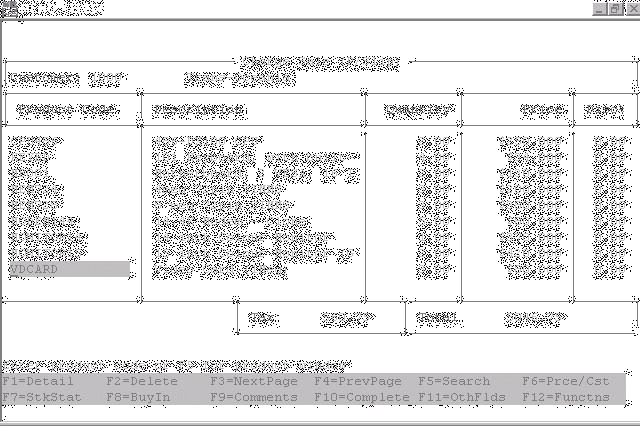

Written by Kerry Sainsbury
This document discusses some of the features of Informix 4GL, and gives you some guidelines on how they can be used successfully. We'll also high-light some common problem areas, and point you at their solutions. The chapter assumes you have some programming experience (although not necessarily with Informix-4GL), and so is not any kind of 'primer' -- there are no analogies between variables and mail-boxes, nor are you required to make an itemized list of all the activities required to boil an egg.
Informix 4GL is like most of the professional athletes I see on TV. It's powerful, understands simple instructions, and is generally excellent at doing what it has been designed to do. 4GL has been built to help programmers provide solid business solutions in a relatively short time-frame. The native support for SQL statements, combined with easy-to-use Data Entry and Reporting functions, make it ideal for most business requirements. Informix 4GL is lousy at rendering polygons, and has no support for joysticks, mice, or sound-cards. You're not going to use it to write the next smash-hit arcade game.
Informix-4GL is a Structured Language, much like Pascal, any modern BASIC, or (to a lesser extent) C. In a nut-shell this means it has a WHILE-loop, user-definable functions, and generally discourages the use of GOTO. It's not one of those crazy flag-driven languages like RPG III, nor is it table-driven, like many other tools who also call themselves a "4GL". Informix-4GL is pretty much a regular procedural language. Here's a sample program that displays 10 numbers on your screen:
MAIN
DEFINE i SMALLINT
FOR i = 1 TO 10
DISPLAY i
END FOR
END MAIN
4GL code can be edited with any text editor you fancy -- you're never left wondering where-abouts the "program" is, because it's just a regular ASCII file.
Informix-4GL tries not to care much about how we use our variables. It's basic assumption is that we know what we're doing. Pascal, a strongly typed language, would barf badly at this code:
program test;
var x : String;
begin
x :=
'123';
x := x + 1;
end.
The Pascal compiler would refuse to compile this program -- because it makes no sense to add one to a string (even if the string does contain a numeric value). Informix-4GL, on the other hand, would compile the 4GL equivalent quite happily -- secure in the knowledge that the programmer knows exactly what she is doing. If we want to add one to a string, that's fine. 4GL will have a good crack at figuring out what you want to happen, based on whatever seems most sensible to it at the time. See how Informix-4GL lets you mix and match variables of different types:
MAIN
DEFINE i INTEGER, f FLOAT, c CHAR(20)
LET c = "99"
LET i = c + 1
DISPLAY i -- Displays 100
LET c = "HELLO
JUDY"
LET i = c + 1
DISPLAY i -- Displays
1
LET f = 99.0
LET i = f + 1 DISPLAY i --
Displays 100
END MAIN
So, although it can be annoying when 4GL doesn't fall over when you start doing arithmetic with description fields, it's a positive boon when you want to add floats to integers, or decimals, or smallints, or money fields.
Informix-4GL, a language written by a Database company and designed to access Relational Databases, includes (and this won't surprise you at all) excellent support for SQL statements.
Traditional languages (C, Pascal, Fortran etc.) only have native support for sequential file access and, if you're lucky, the Indexed Sequential Access Method (ISAM). If you want to talk to a 'real' database, you need some sort of 3rd party library.
Compare the amount of effort required to do a simple SELECT in the following code snippets:
MAIN
DEFINE l_table_name CHAR(30)
DATABASE stores
SELECT tabname INTO
l_table_name
FROM systables
WHERE tabid =
1
DISPLAY l_table_name
END MAIN
Borland Delphi (Library Support)
var myQuery : TQuery;
l_table_name : String[30];
begin
myQuery := TQuery.Create(Self);
with myQuery do begin
DatabaseName :=
'stores';
Close;
SQL.Clear;
SQL.Add('select tabname');
SQL.Add('from systables');
SQL.Add('where tabid =
1');
Open;
l_table_name :=
FieldByName('tabname').AsString;
Close;
end;
myQuery.Free;
writeln(l_table_name);
end;
Informix-4GL is certainly easier to read, and requires far less code, than does a product without native SQL support.
NOTE: Informix-4GL will only talk to an Informix database, while tools which use the library approach can talk to many more databases. NewEra, 4GL's heir apparent, provides two options -- native SQL, which only talks to Informix, or a class library which will talk to practically anything.
The whole meaning of "4GL" is pretty much open to opinion. In the late Eighties (when Informix-4GL was being developed), people were looking for some way to distinguish their high-level, business-oriented, languages from their 3GL cousins, and "4GL" became very much the buzz-word d'jour -- much as "Visual" has today. The Marketing department, one assumes, felt that "Informix-4GL" had far more street-credibility than "Informix-BASIC" ever would. I'd suggest that they were exactly right. The reason Informix claim this language to be a 4GL, is because it includes a number of event-driven (or "non-procedural") commands.
With these commands the programmer specifies what should happen when particular events occur, and then lets 4GL manage the actual user interaction (or report generation) itself. The reporting routines, for example, will automatically print report headers and trailers as they are needed. All the programmer has to do is specify what the heading should look like -- he doesn't have to keep track of line numbers, or in any way decide when a header needs to be printed. It's this kind of high-level functionality that sets Informix-4GL apart from other languages of its generation.
Informix-4GL comes with very few Compilation Directives, but even these few can cause confusion -- one has subtle side-effects at runtime, and another doesn't even look like a compilation directive. Additionally, 4GL is missing some of the "normal" directives often found in 3GL languages. This section describes the compilation directives that Informix supply, and the things to watch out for when you use them.
When we put a DATABASE directive before the first MAIN, FUNCTION, or REPORT section of a 4GL module, we're defining the database to be used for evaluation of LIKE declarations. Each 4GL module which uses LIKE must include a DATABASE directive before any of the module's procedural code. If we stick a DATABASE statement inside procedural code then we cause 4GL to close its current database connection, and connect to the specified database instead. 4GL will then use this database whenever any SQL statements are executed. Here's an illustration of the distinction between the two uses of DATABASE:
DATABASE development -- Compile-time, tells 'LIKE' to use the -- 'development' database for data declarations
MAIN
DATABASE production -- Run-time, tells 4GL to use
the 'production'
-- database when
executing SQL statements
DISPLAY get_last_name(123)
END
MAIN
FUNCTION get_last_name(l_person_id)
DEFINE l_person_id LIKE
person.person_id -- these LIKEs uses the 'development'
DEFINE
l_last_name LIKE person.last_name -- database to decide what data
type
-- they
actually end up with
SELECT last_name
INTO
l_last_name
FROM person
WHERE person_id =
l_person_id
RETURN l_last_name
END FUNCTION
If, and this is a bit weird, you have a DATABASE directive in the module containing the MAIN section of a program, then Informix also behaves as though you had placed a DATABASE statement inside that MAIN section.
So what's wrong with that? Well, it means you have to have a 'development' database on every system you deploy your programs at. It's not the end of the world though -- the databases don't have to have any tables in them -- just a wee bit annoying. Of course if you do all your program development on your production database you'll have no problem at all -- but then you'd probably be a few bricks short of a load.
Informix-4GL lets you define the default error handling for a 4GL module at compile-time, not run-time. Briefly, your options are
This 'WHENEVER' statement should be the first 'executable' statement in each 4GL module of your program. Here's some strange-looking code which illustrates the fact that WHENEVER... is a compile-time directive, and not a normal 4GL statement:
MAIN
DEFINE x SMALLINT
IF TRUE THEN
WHENEVER ANY ERROR CONTINUE
ELSE
WHENEVER ANY ERROR STOP
END
IF
LET x = 1 / 0
END MAIN
In the above example, the compiler will STOP and report a division by zero error on the last line -- this is because the 'WHENEVER ANY ERROR STOP' is the most recent 'WHENEVER'.
You cannot make 'WHENEVER' statements conditional at runtime!
The traditional compiler directives, such as those found in C or Pascal, don't exist in 4GL. These directives can provide the developer with a way of conditionally controlling the construction of her program at compile time.
By using such tools you can make your executable code smaller, because you may exclude inapplicable routines at compile-time.
If you want to make use of such directives, don't dispair -- even though 4GL doesn't have any native method of providing them, you can use the standard UNIX tools "m4" or "cpp" instead.
We're going to talk about Variables, and the ways in which they can (and cannot) be used within Informix-4GL.
One of the first programming languages I had a professional encounter with was Data General's "Business BASIC". Variables were nearly meaningless in this language because they suffered from a six character limit on their names. Readability suffered!
With 4GL, variable names can be as long as you like -- so you can have no excuse for not creating wonderfully descriptive names. Up until recent releases you had been unable to use some 'reserved words' as variable names, but now you're able to write code like that shown below:
main define if, let, then, end, else smallint
if then or else then
display if else if end and if then else end if end if
end main
I'll leave the decision about whether you should use reserved words as variable names up to you!
If you're compiling with the C-based compiler you need to avoid C-language reserved words or function names. Here's a small program that 4GL won't take kindly to:
main
call printf("F")
end main
function printf(l_variable)
define l_variable
char(10)
display l_variable
end function
Informix-4GL comes in two main flavours -- a pcode based version, called 4GL-RDS (Rapid Development System) and a C-language based version often called 4GL-C. The RDS flavour initializes all your local variables for you when they are created, while C-4GL does not -- meaning that you will have undefined values in your variables when you first access them.
| Datatype | Initial Value |
| Integer & SmallInt | 0 |
| Float, Real, Smallfloat, Double Precision | 0.00 |
| Date | 31 December 1899 |
| Decimal, Numeric, Money, Char, DateTime, Interval | NULL |
Module variables and Global variables (shudder) are initialised by 4GL-C, as well as 4GL-RDS, in the same manner as shown in the above table. It is not possible to specify your own initial variables, with something like:
DEFINE l_months_in_year SMALLINT = 12
There are number of limitations placed on you when you start passing values down into functions.
When we pass a parameter into a function it is always passed "by value". This means that a copy of the variable is sent down to the function, rather than the actual variable itself.
The called function then can mess about with the value all it likes, but those changes will not be reflected in the original variable unless it is RETURNed back into the original variable, as shown here:
MAIN DEFINE l_myname CHAR(20)
PROMPT "Enter Maiden
Name: " FOR l_myname
CALL get_married(l_myname) -- 1. At
this point a copy of l_myname is placed in l_name
RETURNING l_myname -- 3. l_myname is set to the value in l_name
END
MAIN
FUNCTION get_married(l_name)
DEFINE l_name CHAR(20)
CASE l_name
WHEN "Parish" LET l_name = "Sainsbury" --
2. l_name is altered, but
l_myname is not
WHEN "Edlin"
LET l_name = "Boyce"
END CASE
RETURN
l_name
END FUNCTION
This is pretty good really -- it means that when you see a variable being passed as a parameter to a function you can be secure in the knowledge that the routine is not secretly changing the variable. It adds a great deal to helping understand the flow of variables throughout a program.
A downside to only being able to pass parameters "by value" is that it means that passing large strings in and out of functions is slow -- this is because the string has to be copied from one large string to another, and that takes time. Another, more major, string-related obstacle, is that prior to 4GL version 4.12/6.02, a function could not return a string which was larger than 512 characters. The current limit has now been increased to the maximum size of a string -- 32767 characters. Manipulation of large strings is one of the few legitimate reasons for using a global variable.
Sorry, can't do it. You can either pass each element of the array individually to the function, and let it rebuild your array on the other side, or you can put your array into a modular variable and include all manipulation of the array in one 4GL module. Putting your array into a global variable would also work, but would set you up for all the usual maintenance problems associated with global variables. See 'Dealing with the Array' and 'Global Variables' in Chapter 33 'Techniques for Writing Reusable Informix-4GL', for more information.
When you write a commonly used routine which is capable of performing a number of subtly different jobs, it is usual to indicate which actions you want the routine to perform by sending down different flags.
Imagine you have a routine which analyses the Evening's television schedule, and returns information about programs you are interested in -- depending on how some flags have been set. Your first attempt at the interface to the routine might look like this:
MAIN
CALL show_programs(TRUE, FALSE, TRUE, FALSE)
END MAIN
FUNCTION show_programs(l_want_soaps, l_want_drama,
l_want_comedy,
l_want_news)
DEFINE l_want_soaps SMALLINT,
l_want_drama
SMALLINT,
l_want_comedy SMALLINT,
l_want_news SMALLINT
IF l_want_soaps THEN
...
END IF
IF l_want_drama THEN
...
END IF
...
END FUNCTION
This is fine, as long as we are certain that we will never be interested in any different types of television programs. Should a fascination with "nature" shows ever develop, you'll not only need to change the interface to "show_programs()" but you'll need to alter every program that calls it too!
A more flexible approach might be to pass a single string instead, which we can dissect inside the function:
MAIN
CALL show_programs(":SOAPS:COMEDY:NATURE:")
END MAIN
FUNCTION show_programs(l_want)
DEFINE l_want
CHAR(200)
IF l_want MATCHES "*:SOAPS:*"
THEN
...
END IF
IF l_want
MATCHES "*:DRAMA:*" THEN
...
END
IF
...
END FUNCTION
When dealing with records it is good to remember that they are just collections of variables "glued" together in one convenient lump. You can pass records into individual variables, and vice-versa. So the following is a legitimate piece of code:
MAIN DEFINE l_firstname CHAR(20),
l_lastname CHAR(30),
l_name_rec RECORD
OF
first
CHAR(20),
last
CHAR(30)
END RECORD
CALL
show_name(l_firstname, l_lastname) -- these two calls are
equivalent,
CALL show_name(l_name_rec.*) -- show_name
doesn't care if
END MAIN
-- record is used or not
A final peculiarity about Informix-4GL is that it is quite happy to let you RETURN a variable number of parameters:
FUNCTION choose_a_key(l_table_name, l_key_count)
... [ code to
interrogate the table, and allow selection of a key, removed ]
...
IF l_key_count = 1 THEN
RETURN
la_key(1)
END IF
IF l_key_count = 2
THEN
RETURN la_key(1), la_key(2)
END IF
IF l_key_count = 3 THEN
RETURN la_key(1),
la_key(2), la_key(3)
END IF
END FUNCTION
This ability can come in quite handy in a general-purpose routine to access key fields from a table, for example.
Informix-4GL has no native support for constants, and only "Modular" and "Global" variables are static.
Constants can, to some extent, be replaced with a normal variable. Another option to consider is the use of a preprocessor, like m4 or cpp, to provide a more traditional implementation of a Constant.
Informix have given us a number of options to help us control the flow of execution through our programs. This section describes the differences between the options, and when some are more appropriate to use than others.
When you're iterating through a cursor, processing rows from a table, the two most common ways people do this are via a WHILE/FETCH combination, or with FOREACH. Here's a WHILE/FETCH loop
DECLARE stock_curs CURSOR FOR
SELECT product_code,
stock_on_hand
FROM stock
WHERE branch_code
= l_branch_code
OPEN stock_curs
WHILE SQLCA.SQLCODE = 0
FETCH
stock_curs INTO l_product_code, l_stock_on_hand
...
END
WHILE
CLOSE stock_curs
> versus the FOREACH loop:
> DECLARE stock_curs CURSOR FOR
SELECT product_code,
stock_on_hand
FROM stock
WHERE branch_code
= l_branch_code
FOREACH stock_curs INTO l_product_code,
l_stock_on_hand
...
END FOREACH
Generally speaking, FOREACH code is easier to read and takes less lines to implement. There are some things that FOREACH cannot do, and we'll discuss those next.
When you're going to be DECLAREing you cursor many times it makes sense to PREPARE the SELECT statement, and specify the parameters you want to use when the cursor is OPENed. Not having to repeatedly DECLARE your cursor will speed up your program, which is good.
LET l_prep = "SELECT product_code, stock_on_hand",
" FROM stock",
" WHERE branch_code = ?"
PREPARE stock_prep
FROM l_prep
DECLARE stock_curs CURSOR FOR
l_prep
...
...
OPEN
stock_curs USING l_branch_code
WHILE SQLCA.SQLCODE =
0
FETCH stock_curs INTO l_product_code,
l_stock_on_hand
...
END
WHILE
CLOSE stock_curs
You'll note the use of the USING clause on the OPEN statement, which indicates the value which will replace the "?" in the PREPAREd SQL statement. FOREACH has no USING clause (at least not until versions circa 4.13/6.02), and so cannot be used with PREPAREd cursors.
Informix's IF...THEN...ELSE control blocks behave in the same way as any other language's do, nearly.
If the tested condition evaluates to TRUE, then the statements in the THEN block are executed, otherwise those inside the ELSE block are run.
TIP: Remember that 4GL considers 'FALSE' to be zero, and 'TRUE' to be anything-except-zero.
The only trick to 4GL's IF, is the way it treats 'AND' statements -- 4GL will check every condition in the AND list, even after it encounters a condition which fails.
Although the following code looks sensible, it will blow up with a -1326 error (An array variable has been referenced outside of its specified dimensions) because it tries to access element zero of the array:
DEFINE la_list ARRAY[20] OF CHAR(1),
i SMALLINT
LET i = 0
IF i > 0 AND la_list[i]= "X"
THEN
DISPLAY la_list[i]
END IF
4GL's CASE statement, while largely the same as in other language's, does have a few peculiarities of it's own.
There are two ways to drive a CASE statement -- one in which your 'WHEN' clause applies to a variable specified in the 'CASE' clause (a bit like Pascal's), and another which lets you have independent checks in each clause.
CASE l_taxtypeThe style shown above is the least flexible of the two styles. It irrationally assumes that "l_taxrate" will always control calculation of the rate -- imagine trying to cope with a Governmental decision to give a 0% tax rate if the current date is within 6 months of an election, you'd either place the new test inside each "WHEN" clause, or contrive a fake taxtype (which would destroy l_taxtype for use in any other processing).
CAUTION: The CASE [variable] technique does not allow 'OR' conditions in the 'WHEN' clauses. Although 4GL gives no syntax error when compiling, at runtime it will most likely ignore any WHEN clauses containing an 'OR'. The 'WHEN "B" OR "C"' in the above example will never be executed.
The other CASE syntax requires IF-like tests on each WHEN clause. Although it requires more typing than the alternative, it also is far more resilient to change, and it lets you use OR successfully:
CASE
WHEN TODAY > l_election_date - 6 UNITS
MONTH
LET l_rate = 0.0
WHEN
l_taxtype = "A"
LET l_rate =
12.5
WHEN l_taxrate = "B" OR l_taxrate =
"C"
LET l_rate = 24.0
OTHERWISE
ERROR "Found a strange
type!"
EXIT PROGRAM 1
END
CASE
Notice that both examples include an OTHERWISE clause, which is used to catch errors and is not used to deal with real processing. If you use OTHERWISE as anything other than an exception handling clause you're opening yourself up to any number of very subtle bugs caused by invalid data sneaking into it
TIP: Try to put the most-often executed path as your first WHEN clause, so that 4GL doesn't have to do more WHEN testing than it needs to. Remember that 4GL CASE statements aren't the same as C 'switch' statements -- once a valid WHEN clause is found, 4GL stops looking at any others, and you don't have to include an EXIT CASE statement inside every WHEN clause either!
Yes, Informix-4GL has a GOTO statement. No, you really, really, don't want to use it. The use of GOTO statements, except under exceptional circumstances, invariably leads to unmaintainable code. Do you want unmaintainable code?
One of the most outstanding features of Informix-4GL are the INPUT and INPUT ARRAY commands. These commands let you edit entire records (and entire arrays!) at one time. This section will help you in your use of these powerful commands.

An application making use of an INPUT ARRAY statement to provide entry of order lines.
INPUT, and INPUT ARRAY, require a form file (.per) in order to function. One of the attributes you can setup inside a form file is the default value for each data entry field, so that when you go into an INPUT or INPUT ARRAY your fields all get nice default values in them.
This is great when you're adding a new record, but really bad when you're trying to change an existing one.
If you specify the WITHOUT DEFAULTS clause in your INPUT, or INPUT ARRAY, you then edit whatever the current contents of your INPUT variables are.
So, instead of defining default values in your form file, just set them up programmatically before you INPUT a new record. Otherwise, if you insist on not using WITHOUT DEFAULTS (if you can follow that double-negative!), you're going to have to code separate INPUTs for adding new records, and maintaining existing ones -- and duplicate a heck of a lot of code along the way! In summary: always make sure you use the 'WITHOUT DEFAULTS' clause.
Inside an INPUT ARRAY it is possible to insert new lines (the default key is F1), or delete existing ones (F2). Sometimes, however, you want to be able disable this ability. There are a couple of ways you can achieve this...
The 'OPTIONS' statement is the recognised method of changing a whole range of options - including the INSERT KEY and DELETE KEY. The only problem with 'OPTIONS' is that they are global to the program -- it is not a clause of the INPUT (or INPUT ARRAY) statement.
Imagine a program which allows entry of monthly budget figures in an array. This first array disables INSERT and DELETE keys because it's not possible to remove months from a year, nor add new ones.
From inside this array the user can hit F5, which opens a new window containing another INPUT ARRAY which allows entry of detailed information. At this detail level it does make sense to allow insertion and deletion of lines, so the subroutine turns on the appropriate OPTIONS. So when we exit the detail array, and return to the main monthly array, we now find that we can insert and delete months!
The following pseudo-program illustrates that OPTIONS are global, and can stuff things up nicely:
MAIN
...
OPTIONS INSERT KEY(F36),
DELETE KEY(F36)
INPUT ARRAY la_monthly_total WITHOUT
DEFAULTS FROM monthly_totals
ON KEY(F5) CALL
enter_monthly_breakdown(arr_curr())
END INPUT
END
MAIN
FUNCTION enter_monthly_breakdown(l_month)
...
OPTIONS INSERT KEY(F1), DELETE KEY(F2)
INPUT ARRAY la_detail WITHOUT DEFAULTS FROM detail_breakdown
END
FUNCTION
NOTE: There is no way to "turn off" the INSERT or DELETE key, so assigning them to values which you cannot enter is a favourite work-around. The examples in this section map the keys to "F36" on the assumption that you don't have 36 function keys on your terminal (or defined in your termcap), and so can't press it. Control-Z is another popular choice because UNIX traps it before it gets near your 4GL program. Take your pick
The final nail in the coffin of 'OPTIONS' is that it's not possible to ask 4GL what the current value of an OPTION is -- otherwise we could record the current values, mess about with the options as required, and then restore them to their previous state.
If you're keen, you can build some wrapper routines for the various OPTIONS. In these wrapper routines you could record the current value and so restore the option to it's previous value once you've finished with it.
Here's an example of how to use such a wrapper:
MAIN
...
CALL
options_insert_key("F36")
INPUT ARRAY la_monthly_total WITHOUT DEFAULTS FROM
monthly_totals
ON KEY(F5) CALL
enter_monthly_breakdown(arr_curr())
END INPUT
CALL restore_insert_key()
END MAIN
FUNCTION enter_monthly_breakdown(l_month)
...
CALL options_insert_key("F1")
INPUT ARRAY la_detail WITHOUT DEFAULTS FROM
detail_breakdown
CALL restore_insert_key()
END FUNCTION
...
and
here's the OPTIONs wrapping module itself:
OPTIONS.4GL:
DEFINE
ma_insert_keys ARRAY[20] OF CHAR(10), -- Allows
20 levels of nested options
m_insert_stack SMALLINT
FUNCTION options_insert_key(l_key)
DEFINE l_key
CHAR(10)
LET m_insert_stack = m_insert_stack +
1
LET ma_insert_keys[m_insert_stack] =
l_key
CALL assign_insert_key(l_key)
END FUNCTION
FUNCTION restore_insert_key()
LET m_insert_stack =
m_insert_stack - 1
IF m_insert_stack THEN
CALL
assign_insert_key(ma_insert_keys[m_insert_stack])
END
IF
END FUNCTION
FUNCTION assign_insert_key(l_key)
DEFINE l_key CHAR(10)
CASE l_key
WHEN "F36" OPTIONS INSERT KEY
F36
WHEN "F1" OPTIONS INSERT KEY F1
OTHERWISE
ERROR "Oops - I don't know about that sort of
insert key!"
END CASE
END FUNCTION
Imagine you have an INPUT ARRAY which needs to sometimes disable the use of the INSERT or DELETE key -- maybe you want to stop people from deleting existing lines, but need to allow addition of new lines.
Although there is a "BEFORE DELETE" clause, there is no statement that you can put inside it which will stop the deletion from taking place (with the exception of EXIT INPUT -- which is complete overkill if you're just trying to stop deletion of a line!).
CONTINUE INPUT will continue with the deletion -- there is no "CANCEL INPUT".
The solution is to move the check to see if the line can be deleted into the BEFORE ROW clause, and set your OPTIONS appropriately:
FUNCTION enter_lines()
INPUT ARRAY ma_lines WITHOUT
DEFAULTS FROM lines_scr.*
BEFORE ROW
IF
arr_curr() <= 5 THEN -- Can't delete first 5 lines
OPTIONS DELETE KEY F36
ELSE
OPTIONS DELETE KEY F2 -- but can delete
any other line
END IF
END INPUT
END
FUNCTION
Skipping to the next row of an INPUT ARRAY is an often required action. You might want to force a user out of the current line (perhaps to stop them from changing it) or you might want to jump to a particular line in an array because it contains incomplete information.
Although the 6.0 4GL manuals mention the 'NEXT ROW' command in a couple of places ('Reference: Volume One' p 3-155, and in more detail 'Concepts and Use' p 7-19) it is a sad fact that the command does not actually exist. It appears to have been an act of wishful thinking on the part of the documentation team.
Even worse, it's apparently not even on the 4GL 'to do' list.
The work-around is based around the fact that if you NEXT FIELD to a NOENTRY field, 4GL bumps you on to the next field that allows entry. So if you make the last field in your INPUT ARRAY a NOENTRY field, then whenever you NEXT FIELD to it you'll fall down to the next line of the array.
A complete routine to show how to implement a 'skip-to-a-particular-line' routine.
# Assumes that the last field of the screen record 'printer_scr'
line
# is a NOENTRY field called "skip"
FUNCTION edit_printer_list()
DEFINE l_curr SMALLINT,
l_skip SMALLINT,
l_finished
SMALLINT,
l_last SMALLINT
LET l_finished = FALSE -- The INPUT isn't finished
yet
LET l_skip = 0 -- Indicate we're not skipping to any
line
WHILE NOT l_finished
INPUT ARRAY
ma_printer WITHOUT DEFAULTS FROM printer_scr.*
BEFORE ROW
LET l_curr = arr_curr()
-- What line are we on now?
IF
l_skip THEN -- If we're in skip-mode
IF l_skip != l_curr THEN -- But the current line isn't the
one we want
NEXT FIELD skip --
then skip to the next line
ELSE
-- Else we've found the line we want
LET
l_skip = 0 -- So turn-off skip-mode
END IF
END IF
AFTER INPUT
IF int_flag THEN -- If they hit CANCEL
then
LET l_finished = TRUE -- leave
the INPUT
EXIT INPUT
END
IF
LET l_last = arr_count()
FOR l_curr = 1
TO l_last -- Look for an invalid line
IF NOT
line_is_valid(ma_printer[l_curr].*) THEN
LET l_skip
= l_curr -- Found one, so set skip flag to indicate line
EXIT INPUT -- we want, and jump out
of INPUT (temporarily)
END IF
END FOR
LET l_finished = TRUE
-- If got here then found no problems, so finish
up
END INPUT
END WHILE
END
FUNCTION
CAUTION: Although the skip-to-a-particular-line routine above does work, it can be visually jarring when your array is larger than a screenful. It's only really viable in small arrays.
The 4GL language does a great deal for you, but there are times when you need to go beyond its bounds. Informix lets you do this in one of two ways. lb You can call a C routine lb You can execute any UNIX command via the RUN statement
4GL programs are able to call C-language routines. See Chapter 11 "Implementing C routines with I-4GL" for details on how to go about implementing such connections, but be sure to take heed of the following warning before you do:
CAUTION: The decision to use C-routines, especially with 4GL-RDS, is not one to take lightly. One of the huge strengths of RDS is its portability -- you can compile your programs on a Unisys box, and deploy them without change on an IBM or Sequent. The moment you decide to create custom runners that flexibility disappears, and you have to start finding C compilers on all machines you want your program to run on. This isn't a major issue for 'inhouse' Software development, but a Software house really needs to think twice before they start using C-routines.
The RUN command spawns a new instance of a UNIX shell, and executes any UNIX commands passed to it as a parameter. This opens a myriad of ways in which we can enhance our 4GL programs. We can use it to do things like "lp" (print) an ASCII file, or fire up a Word Processor, or send some email:
RUN "echo 'Good Morning' | mail judy"
UNIX commands, when they finish, set a thing called an "Exit Status". This status indicates what caused the command to finish its execution. Generally this is zero if the command executed normally, while a non-zero status represents an error of somekind.
RUN's "RETURNING" clause allows your Informix program to interrogate this exit status, and behave appropriately:
DEFINE l_status SMALLINT
...
RUN "echo
'Good Morning' | mail judy" RETURNING l_status
IF l_status
<> 0 THEN
ERROR "email could not be sent --
check that 'mail' is in your path!"
END IF
CAUTION: A long-standing Informix bug is that the value returned into a 'RETURNING' variable is incorrect by a factor of 256. i.e. if a UNIX program exits with a status of 1 then your variable will return with 256, a status of 2 returns with a value to 512, etc. Always make sure you divide your variable by 256 before you try to interpret it! This is such an old bug that I can't really imagine Informix will ever fix it -- doing so would break too much code!
RUN's "WITHOUT WAITING" clause lets you kick off a command, but doesn't insist that your 4GL program sits and waits for the command to finish before continuing with the next line of 4GL code
This can provide large performance improvements if used carefully. The following code, for example, does not cause the program to sleep for 10 seconds (although the spawned shell does -- have a look at the 'proof.txt' file this program generates):
MAIN
DEFINE l_time CHAR(10)
LET l_time =
time
DISPLAY l_time
RUN "date >
proof.txt; sleep 10; date >> proof.txt"
WITHOUT WAITING
LET l_time = time
DISPLAY
l_time
END MAIN
CAUTION: Before you use 'WITHOUT WAITING' you need to be completely sure that your UNIX command isn't going to fail -- or that you don't care if it doesn't work properly!
One excellent use for the RUN command is to execute other 4GL programs as they are needed. Imagine you are busy receipting some Bicycles you'd requested from a Supplier, when you discover that you haven't created a product code for the Bike yet. Your program could behave in a number of ways:
Option 1 doesn't conform to any recognised definition of "User Friendly" that I've ever encountered, but is certainly still required in many instances -- you don't want to let people run about creating new Products/Customers/Currencies etc without very good reasons!
Options 2 and 3 aren't radically different, except that Option 3 uses the RUN command to kick off the creation program, while Option 2 does the same thing via a call to a normal FUNCTION.
Taking Option 2 will rapidly lead to code-bloat (ie: very large executables -- especially if you want to offer access to a number of 'Creation' programs), although it will execute a bit faster than the RUN-based approach in Option 3.
TIP: When RUN'ing 4GL programs consider passing command-line arguments to the program to control how the program is to be used. In the example, for instance, although the 'Creation' program normally includes Search and Deletion facilities you might want to disable these when it is executed from inside the "Receipting" program
CAUTION: Because of Informix's licensing scheme, RUN'ing 4GL programs may need to be given some extra thought before you start implementing it widely. When you RUN another 4GL program you require another run-time license, because you've just become two people. You may need to buy some "extra" licenses to cope with this issue -- and don't even think about writing a Menu system in 4GL!
A common mistake made with RUN is attempting to use it to set environment variables from within a 4GL program. This can't be done because each execution of RUN spawns an independent shell. The following code doesn't work because the second RUN knows nothing about the $MYMESSAGE environment variable -- it belonged to the shell that was created by the first RUN:
RUN "set MYMESSAGE='Hello Word'; export MYMESSAGE"
RUN "echo
$MYMESSAGE"
This next code snippet does work though -- because it all happens within the same shell instance:
RUN "set MYMESSAGE='Hello Word'; export MYMESSAGE; echo $MYMESSAGE"
Instead of trying to use RUN to set an environment variable, you'll need to call a C routine that will do it on your behalf. Such a routine is described in 'Setting environment variables with fgl_putenv()', below.
Environment variables could be described as 'variables for UNIX'. They hold information such as the type of terminal you are using, and the timezone in which you live. Just as Informix require variables like $INFORMIXDIR to be defined before you can use the database, so you can define variables for use in your own application programs. This section gives some guidelines for their use.
The Informix function built to access environment variables is 'fgl_getenv'. If you want to find out what sort of terminal emulation you are using, for example, you'd use some code like this:
LET l_termtype = fgl_getenv('TERM')
Note that the environment variable is not preceded with a '$' (i.e. $TERM) as it would in a UNIX Shell routine.
Although you can look at environment variables with fgl_getenv(), there is no Informix-sanctioned method for setting environment variables from within a 4GL program. (See 'RUN and Environment Variables' for an explanation of why you can't just use 'RUN'). That said, there is a small C routine in Chapter 11 "Implementing C routines with I-4GL" that you can call to add this functionality to your programs.
There are zillions of possible uses for environment variables, but here are a couple which we have found to be useful. Remember that these are not Informix supplied variables -- the creation of these variables is up to you, as is the way you decide to use them.
CAUTION: Don't go hog-wild creating hundreds of your own environment variables! They can become an administrative nightmare if their use gets out of control. As an alternative to environment variables, consider passing arguments to your programs instead, and controlling program flow by examining arg_val() -- although over use of argument passing can be an nightmare too!
When you're analysing the performance of your 4GL programs -- perhaps because a client is complaining that something is running too slowly -- it is extremely handy to be able to dynamically do a "SET EXPLAIN ON" inside your program. (See section 20.11, Explaining SET EXPLAIN, if you need more detail about this command).
The way we use this SQEXPLAIN variable is to set it to name of the program we wish to examine:
SQEXPLAIN = 'program.4gi' export SQEXPLAIN
and then test to see if the variable is set, and if so whether or not we should take turn SET EXPLAIN ON:
# program.4gl
MAIN
IF fgl_getenv('SQEXPLAIN') =
arg_val(0) THEN
SET EXPLAIN ON
END IF
END MAIN
You could just test to see if there is any value in the variable at all, rather than checking to see if it matched the name of the current program, but the method shown above means you can be more selective in your tracking of SQL performance problems.
Another nice use for environment variables is to control the name of the database the program should be accessing. This means you can use the same 4GL executable to access different databases (assuming they all have the same schema of course!).
MAIN
DEFINE l_database CHAR(20)
LET l_database =
fgl_getenv('DATABASENAME')
DATABASE
l_database
...
END MAIN
At a minimum this is handy because you can test a program thoroughly using a 'test' database, and then -- simply by changing the environment variable -- point the program at the 'live' database. To take this technique to an extreme, one organisation has built a multi-terrabyte database which has been broken down into thousands of smaller (less risky) databases.
When a user wants to switch between "cities", the 4GL program closes the current city, changes the environment variable, and starts up again pointing at another database.
NOTE: A similar affect can be achieved by manipulating Informix's 'DBPATH' variable, rather than building your own 'DATABASENAME' one. The restriction being that you'll have to give all your databases the same name -- which might get confusing!
Sometimes you need to access data that lives outside the 4GL Universe. Perhaps you have a need to execute UNIX commands and examine their output, or create an ASCII file to let an Accountant do some fancy modeling in a spreadsheet.
If you're lucky you'll be able to use the SQL 'Load' and 'Unload' commands to read and write formatted data. These commands manipulate data by using a specified delimiter (defaulting to "|") to separate each of the fields in a flat ASCII file. eg:
1|January|1996|12.5| 2|February|1996|13.4|
3|March|1996|15.3|
LOAD and UNLOAD require that there be some character which is never included in you data -- imagine if the second column included a value of "Ap|ril", for example...
NOTE: Some PC databases require "quote-comma" delimited files, which isn't an option that LOAD/UNLOAD supports. In these cases you might be able to sneak things through by writing a sed or awk script to massage the UNLOAD file -- otherwise you'll have to write your own UNLOAD file using one of the techniques described in the following sections.
Perhaps your program needs to write a file suitable for emailing to a client, or maybe the program wants to generate a UNIX shell script (and then execute it!). Whatever the reason, we have a couple of methods at our disposal to perform these tasks.
A somewhat obvious option is to create a report, and output it to a filename rather than sending it directly to the printer. Make sure that inside the REPORT you specify TOP, LEFT, RIGHT, and BOTTOM MARGINs of 0, and a PAGE LENGTH of 1. These settings will stop 4GL from trying to format your 'report' for you.
It might make sense, if your 4GL program has no user interaction, just to use simple 'DISPLAY' statements in your code:
MAIN
DISPLAY 'ls -l'
END MAIN
and use UNIX redirections to put the output of your program into a file:
fglgo program.4gi > little_ls_script.sh
There are a couple of undocumented features of 4GL which can be used to improve your program's usability and attractiveness to those who use your programs.
Our users have long wanted the ability to print out a copy of their 4GL screens, unfortunately the only obvious way to provide such a facility is to write a little report for every screen for which you want to provide the function!
There are a couple of significant problems with this approach:
Fortunately though, there is another option: We could use Informix's 'secret' screen-dumping facility!
Here's a quick summary of how you use the screen dumping function:
To provide access to the screen dump function in your code, you'll need to add an 'ON KEY (CONTROL-P)' clause to all of your INPUT/INPUT ARRAY/DISPLAY ARRAY/CONSTRUCT/MENU statements:
...
INPUT l_product, l_qty WITHOUT
DEFAULTS FROM product, qty
...
ON KEY (CONTROL-P) CALL
screendump()
...
END INPUT
...
FUNCTION screendump()
DEFINE l_run CHAR(250), l_filename
CHAR(100)
LET l_filename =
fgl_getenv("DBSCREENOUT")
LET l_run = "lp -c ", l_filename
CLIPPED,"; rm ", l_filename
CLIPPED
RUN l_run
END
FUNCTION
CAUTION: A number of Informix products, including ISQL, also support the use of DBSCREENOUT. Unfortunately, when adding a new row using an ISQL generated form, CONTROL-P can be used to copy the value from the previously displayed row into the new row -- do this and your $DBSCREENOUT file will start growing really fast. Remember: DBSCREENOUT is unsupported by Informix!
There are two ways of graphic-line boxes on a form in Informix-4GL. You can use the "\g" directives inside your form file, or you can call the fgl_drawbox() function. A box 20 characters wide, 4 high, at column 5, row 2, can be described in a .per file as:
\g+-------------------+\g
\g|\g \g|\g
\g|\g
\g|\g
\g+-------------------+\g
or with a call to fgl_drawbox:
call fgl_drawbox(4, 20, 5, 2)
There is a fifth, optional, parameter to fgl_drawbox, which specifies the colour to use for the box. The parameter is a number between 0 and 7:
| Parameter | Colour |
| 0 | White |
| 1 | Yellow |
| 2 | Yellow |
| 3 | Red |
| 4 | Cyan |
| 5 | Green |
| 6 | Blue |
| 7 | Black |
ie: CALL fgl_drawbox(height, width, column, row, colour)
NOTE: fgl_drawbox() is no longer a 'secret' function -- Although the function has existed since version 4.0 (at least), it is only with the release of 6.0 that Informix have provided documentation and support for it!
If you want to just draw a line, rather than a box, then give fgl_drawbox a height (for a horizontal line) or width (for a vertical line) of 1 -- then DISPLAY " " AT the first and last character positions of the line, so that the "corner" characters get erased from the screen.
This chapter provided an introduction to 4GL coding, and explained some of 4GL's more unusual or confusing features. Take a look at Chapter 31 "Writing Re-usable 4GL Code", which talks about still more things that can make your code easier to work with -- and more likely to be able to be reused in multiple programs.
Good luck!Kerry Sainsbury (kerry@kcbbs.gen.nz).